- Where
- San Francisco State University
- Duration
- 3 weeks
- Methods
- Sketching · CAD · Mock-ups · Welding
- Software
- Fusion
Brief
Build a vehicle that travels as far and as straight as possible, using only steel as a material.
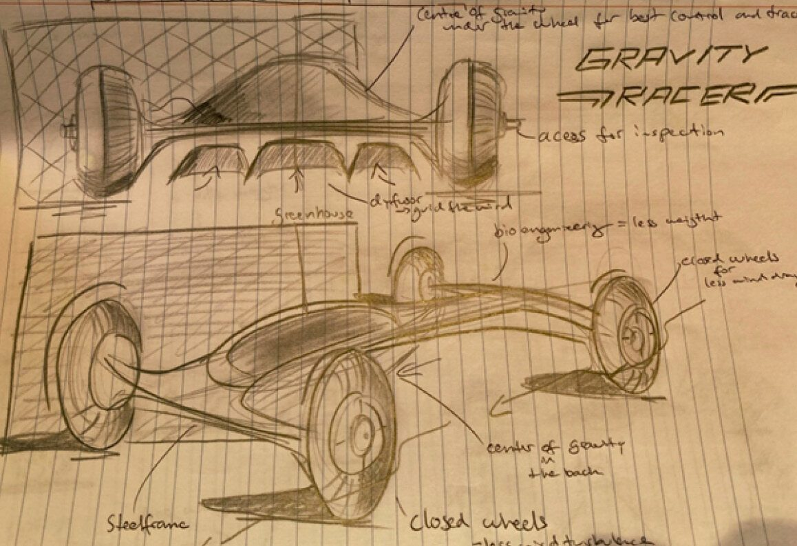
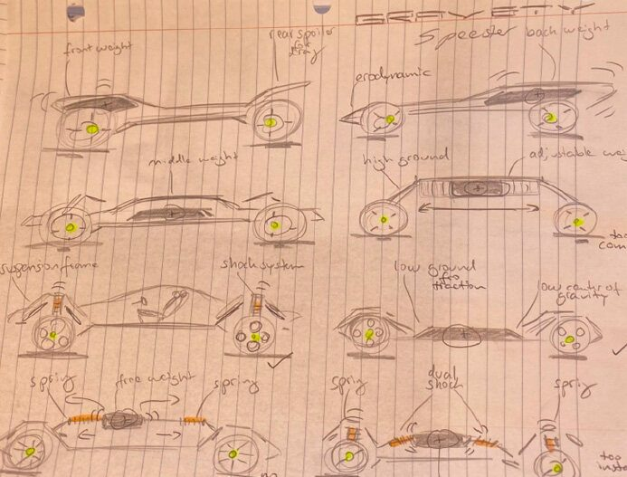
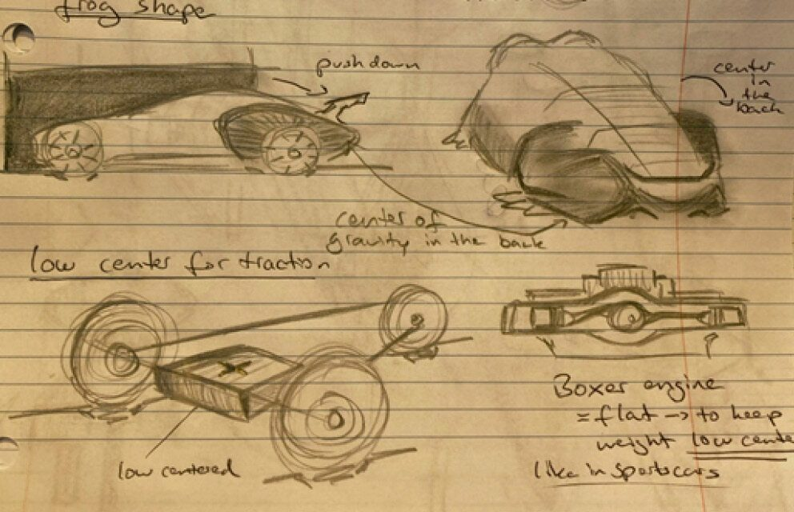
From drawing to welded frame
Measured drawings, a CAD model and wood-and-dowel mock-ups tested proportions before any steel was cut; the frame was then welded in the SFSU workshop.
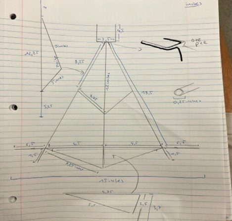
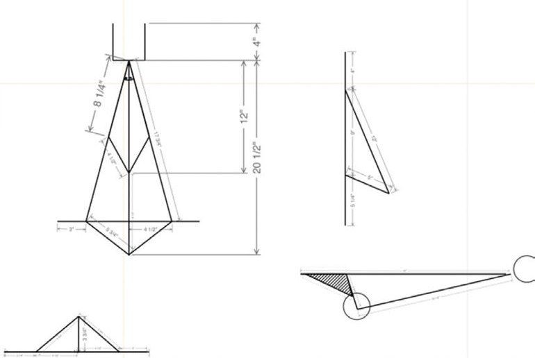
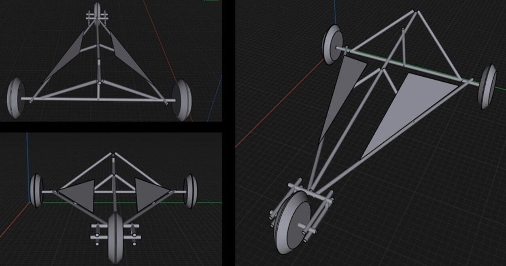
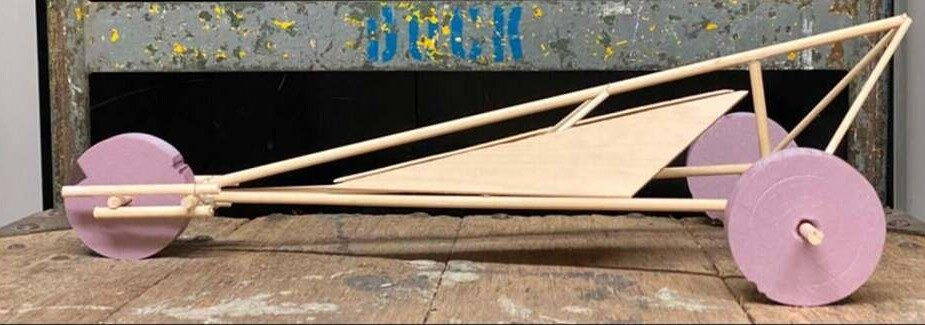
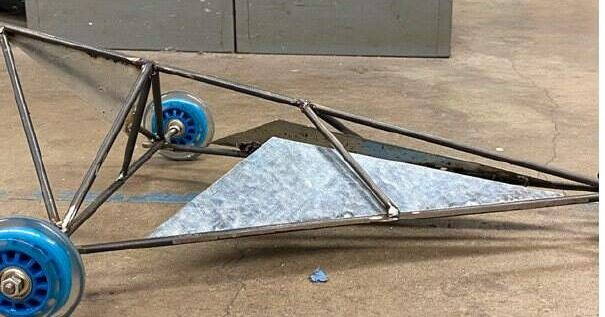
Render studies
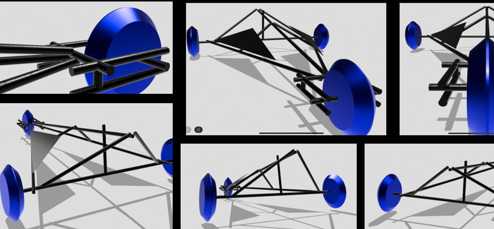
From mock-up to welded frame
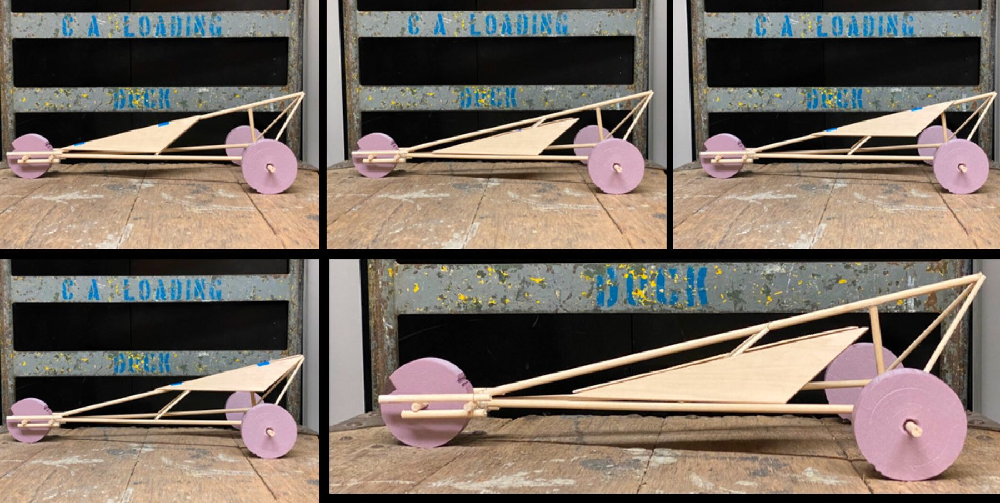
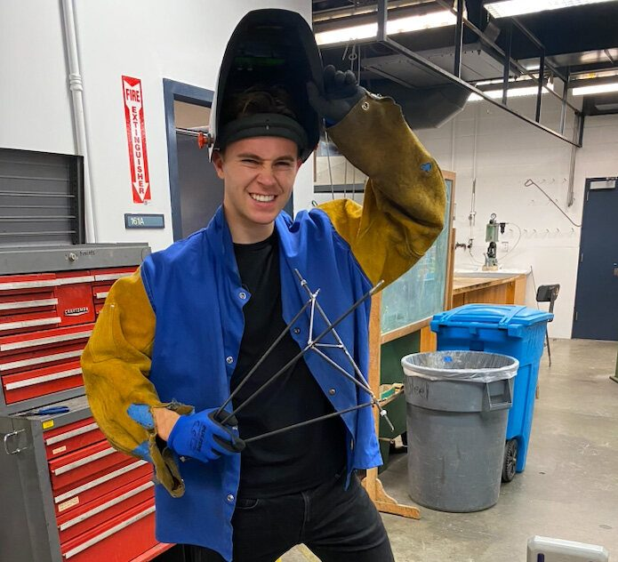
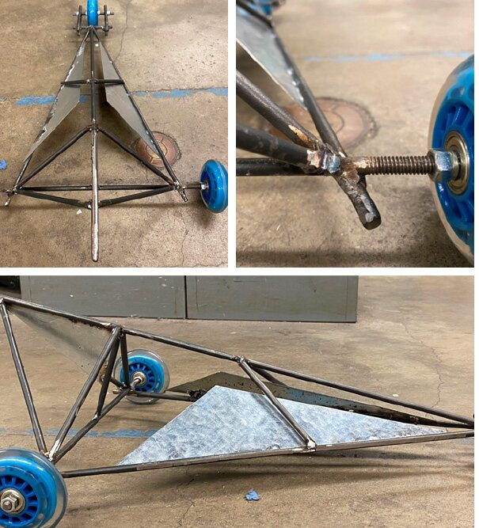
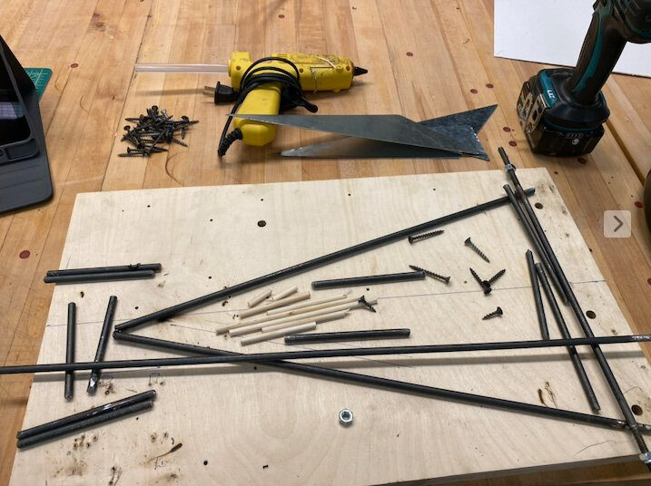
Outcome
A rolling, fully welded steel vehicle, designed and built in three weeks. The project taught me to let material and manufacturing constraints drive form, and to test ideas quickly in cheap mock-ups before committing to metal.